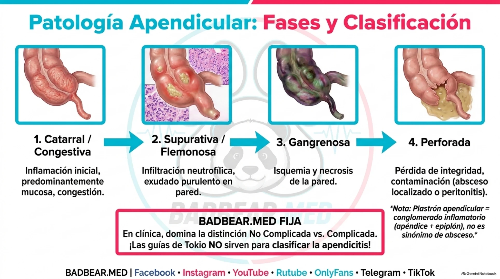
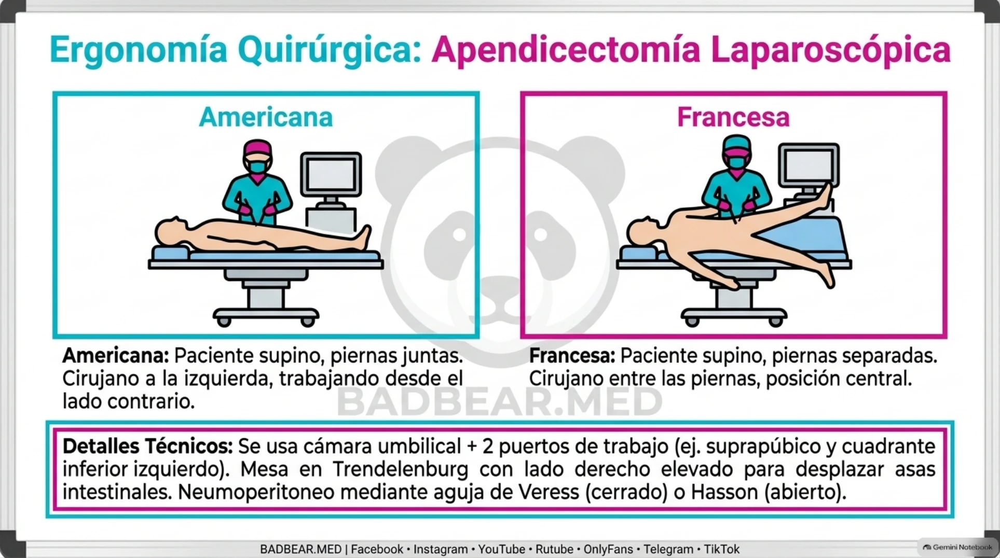

Apendicitis y laparoscopia: clasificación y posiciones americana y francesa
Inflamación, gangrena, perforación, triangulación y diferencias entre posición y técnica de acceso.
Fuentes rápidas del capítulo
Acceso directo a guías, artículos y revisiones internacionales utilizadas en este tema.
Fisiopatología del proceso apendicular
La apendicitis es inflamación del apéndice. La obstrucción luminal por fecalito o hiperplasia linfoide es un mecanismo clásico, aunque no explica todos los casos. La secreción retenida y proliferación bacteriana elevan presión, dificultan drenaje venoso y pueden comprometer perfusión. El daño transmural favorece necrosis y perforación.
La irrigación depende de la arteria apendicular, habitualmente rama del territorio ileocólico. La vulnerabilidad vascular ayuda a explicar gangrena en inflamación avanzada. El dolor visceral puede iniciar en región periumbilical y localizarse en fosa ilíaca derecha cuando se irrita peritoneo parietal; las posiciones anatómicas modifican la presentación.
Clasificación anatomopatológica y clínica
| Tipo clásico | Hallazgo |
|---|---|
| Catarral/congestiva | Inflamación inicial y congestión; predominio mucoso. |
| Supurativa/flemonosa | Inflamación extensa, neutrófilos y exudado purulento. |
| Gangrenosa | Isquemia y necrosis de pared. |
| Perforada | Pérdida de integridad con contaminación local o difusa. |
No toda apendicitis atraviesa inevitablemente todas las etapas. Para conducta clínica se diferencia no complicada de complicada. Perforación, absceso y peritonitis son hallazgos de complicación; la inclusión de gangrena sin perforación varía entre protocolos.
El plastrón es una masa inflamatoria de apéndice y estructuras vecinas; un absceso es una colección purulenta. Pueden asociarse, pero no son sinónimos. Los grados de Tokio se aplican a infecciones biliares, no a apendicitis. [1]

La congestión se relaciona con inflamación; la supuración representa exudado e infiltración; la gangrena es pérdida de viabilidad y la perforación implica ruptura. Para decidir conducta se necesita además saber si hay colección, peritonitis, compromiso cecal y estado general. Un plastrón puede contener la contaminación, pero no equivale a una colección drenable.
Americana y francesa: qué describen
Estos nombres describen disposiciones del paciente y del equipo, especialmente difundidas en colecistectomía. En apendicectomía pueden utilizarse para describir variantes de colocación; no son dos mecanismos diferentes de resección ni establecen un mapa universal de puertos.
| Aspecto | Americana/lateral habitual | Francesa |
|---|---|---|
| Paciente | Supino, habitualmente piernas juntas | Supino con piernas separadas. |
| Cirujano para apéndice | Habitualmente al lado izquierdo | Puede trabajar entre las piernas. |
| Principio | Abordar fosa ilíaca derecha desde el lado contrario | Acceso central y ergonomía adaptada. |
| Puertos | Según triangulación y anatomía | También se adaptan a triangulación. |
La posición final del monitor, ayudantes y brazos se adapta al equipo. No deben trasladarse sin modificación los lados de trabajo de una colecistectomía a una apendicectomía: los órganos objetivo están en regiones distintas. [2,3]

Cómo responder sin confundir conceptos
Separar posición del equipo de acceso inicial. Americana/francesa responde dónde trabajan las personas; Veress/Hasson responde cómo se establece entrada y neumoperitoneo. En la paciente reoperada, lo decisivo es anticipar adherencias y elegir un sitio y técnica seguros; poner al cirujano entre las piernas no evita una lesión de entrada.
Puertos, neumoperitoneo y posición de la mesa
Una disposición frecuente utiliza cámara umbilical y puertos de trabajo suprapúbico y en cuadrante inferior izquierdo. Se busca triangulación, separación adecuada de instrumentos y visión del órgano. La colocación suprapúbica requiere considerar la vejiga; los accesos se planifican para evitar estructuras vasculares.
El neumoperitoneo con CO₂ crea espacio de trabajo. Puede establecerse mediante acceso cerrado con Veress o abierto con Hasson, entre otras opciones. Veress/Hasson describe el acceso, no la posición americana/francesa. La elección depende de contexto, cicatrices y experiencia.
Trendelenburg y elevación del lado derecho desplazan las asas hacia fuera del campo apendicular mediante gravedad. La posición se ajusta a tolerancia anestésica y hallazgos; no es un objetivo independiente de la seguridad fisiológica. [2]
Principios de resección y tratamiento
Se identifica el apéndice y su base, se controla el mesoapéndice y su irrigación, se asegura y secciona la base con un método apropiado y se extrae la pieza protegida. Una base necrótica o compromiso cecal cambia la decisión: no se fuerza una ligadura sobre tejido no viable.
La laparoscopia permite explorar otras causas de dolor y tratar numerosas apendicitis complicadas si existen recursos y experiencia. La conversión o cambio de estrategia se determina por exposición y seguridad. Antibióticos y duración se ajustan a complicación y control del foco; no todas las apendicitis requieren el mismo esquema posoperatorio.
El tratamiento no operatorio puede considerarse en determinados pacientes con apendicitis no complicada confirmada, con información sobre fracaso y recurrencia. La presencia de apendicolito modifica el riesgo. No se convierte esta opción en una regla para cuadros gangrenosos, peritonitis o deterioro. [1]
Laparoscopia tras múltiples cirugías: adherencias, Hasson y punto de Palmer
Caso de la rotación: paciente con colecistectomía previa, laparotomía por apendicitis y otra operación por peritonitis complicada. ¿Puede operarse nuevamente por laparoscopia? Sí, puede ser factible: las intervenciones previas no son una contraindicación absoluta. Sin embargo, la indicación, los hallazgos esperados, el acceso y la experiencia determinan si es apropiada; no se garantiza completar toda operación por laparoscopia.
El riesgo interno no se deduce solamente de la piel
La cicatriz cutánea no es lo mismo que una adherencia peritoneal. La lesión e inflamación peritoneales producen exudado y depósitos de fibrina; cuando su eliminación es insuficiente, pueden organizarse mediante fibroblastos y colágeno formando puentes entre superficies. Peritonitis y operaciones repetidas aumentan la sospecha de adherencias, pero no demuestran que toda la cavidad esté obliterada.
Un asa puede estar adherida bajo una cicatriz. El peligro es atravesarla al introducir aguja o trocar, antes de disponer de visión intraperitoneal. También aumenta la dificultad de liberar tejidos durante la intervención. La historia y los informes operatorios orientan la planificación.
Técnica abierta de Hasson
Es un método de entrada laparoscópica mediante una pequeña apertura de la pared, con exposición de los planos y acceso controlado al peritoneo para colocar una cánula e insuflar CO₂. No equivale a efectuar toda la intervención por laparotomía. Es una opción especialmente considerada en pacientes previamente operados.
El sitio se selecciona según cicatrices y sospecha de adherencias: no debe suponerse que el ombligo es seguro en todos. Hasson no elimina el riesgo: una víscera adherida inmediatamente bajo el peritoneo también puede lesionarse. Ningún método ha demostrado ser universalmente superior en todos los pacientes.
Punto de Palmer: un sitio alternativo, no un sinónimo de Hasson
Se ubica aproximadamente 3 cm por debajo del reborde costal izquierdo, en la línea medioclavicular. Se considera ante sospecha de adherencias periumbilicales para iniciar acceso lejos de cicatrices medias. Puede utilizarse para acceso cerrado con Veress u otras estrategias según equipo. Hasson describe cómo se entra; Palmer dónde se entra.
No es adecuado automáticamente si existe cirugía previa o adherencias en cuadrante superior izquierdo, esplenomegalia, distensión gástrica u otra patología local. La selección requiere valorar ese territorio; la descompresión gástrica es una consideración importante.
Adhesiólisis y límites de continuidad
Tras establecer acceso, se inspecciona y colocan puertos adicionales bajo visión. La separación de adherencias se llama adhesiólisis. Se realiza según lo necesario para la operación, con atención a enterotomía y lesión térmica. No significa destruir todas las adherencias del abdomen.
Si la anatomía no puede reconocerse o la disección es insegura, se convierte a cirugía abierta o se cambia de estrategia. Un abdomen con adherencias densas puede requerir acceso abierto desde el comienzo. Conversión por seguridad es una decisión adecuada, no un fracaso.
Respuesta oral: «Sí, puede ser posible. Las cirugías previas aumentan la probabilidad de adherencias, por lo que debemos planificar un acceso controlado y alejado de zonas de riesgo. Una opción es la técnica abierta de Hasson; si se sospechan adherencias umbilicales, se valora un punto alternativo como Palmer. Se continúa según hallazgos y se convierte si no es seguro».
Lecturas: ISGE: principios de entrada laparoscópica; SAGES: acceso y adhesiólisis; SOGC Guideline No. 412: Laparoscopic Entry.
Repaso y bibliografía
Material visual y audio de la rotación
Abrir el repaso ilustrado completo · 14 páginas · Escuchar el audio de tricobezoares e imagen abdominal.